Testimonial Basics Plugin - Documentation
Thanks for downloading Testimonial Basics.
Index
- Top of Document
- About Testimonial Basics
- Requirements
- License and Credits
- Installation
- Administration Panel - Testimonial Basics
- Administration Panel - Edit Testimonials
- Visitor Input Form
- Displaying Testimonials
- Administration Panel - Options
- Advanced Function
- Summary
About Testimonial Basics
Testimonial Basics facilitates easy management of customer testimonials. The user can set
up an input form in a page or in a widget, and display all or selected testimonials in a
page or a widget. The plugin is very easy to use and modify:
- Testimonials are saved in a database table integrated into WordPress.
- Users access their testimonials through and Administration Panel where it is very easy to add new testimonials, or modify existing ones.
- Testimonials are displayed in a pages content
- The user can display all testimonials or a selected number.
- Testimonials can be displayed by most recent date, or by a user selected order.
- A single selected testimonial can be displayed, or a single testimonial can be randomly displayed every time the page is loaded.
- A single selected or single random testimonial can be displayed in a widget.
- A visitor input form is easily set up in the content of a page, allowing visitors to submit testimonials.
- A visitor input form is also available in widget form.
- The user can include a captcha on input forms to reduce spam.
- User can use a display native to the theme or select a customizable display option.
- The user now has a full set of option features
- Including the Website link is an option
- Including the Date is an option
- Including the Location is an option
- User can select a customizable display
- Select one of nine fonts from a drop down list
- Select text colors using a color wheel
- Select background colors using a color wheel
- Display options for post or page content are separate from widget content
Requirements
Testimonial Basics has been validated using the W3C validator for HTML5, and has had the css validated.
It has been tested in all the major browsers:
- Internet Explorer 7,8,9, Firefox, Chrome, Opera, Safari
- Wordpress 3.4.2
- HTML5
- Basic HTML and Wordpress Experience
License and Credits
License: GNU General Public License V3
License URI: see the license.txt file for license details.
Testimonial Basics is a WordPress Plugin
Copyright (C) 2012 Kevin Archibald
Version : 2.0.0 Released 20121020
This program is free software: you can redistribute it and/or modify it under the terms of the GNU General Public License as published by the Free Software Foundation, either version 3 of the License, or (at your option) any later version. This program is distributed in the hope that it will be useful, but WITHOUT ANY WARRANTY; without even the implied warranty of MERCHANTABILITY or FITNESS FOR A PARTICULAR PURPOSE. See the GNU General Public License for more details. You should have received a copy of the GNU General Public License along with this program. If not, see http://www.gnu.org/licenses/.
Installation
Upload Testimonial Basics to the plugin directory (wp-content/plugins/testimonial-basics) of your wordpress setup. Ensure all sub directories are maintained. Activate the plugin through the Wordpress Admin panel under "Plugins".
Your opening screen will look like this :
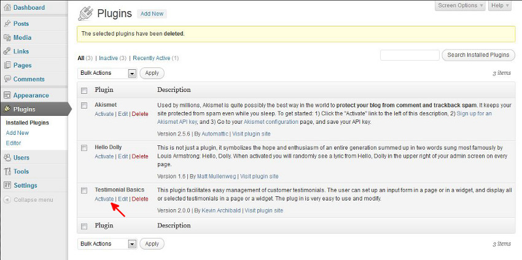
Click the Activate link and the plugin will activate. The screen changes to :
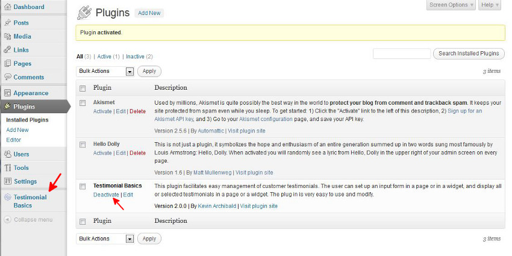
If you want to remove the plugin you must first Deactivate
it then Delete
it. When
you Deacivate
the plugin is not loaded into WordPress, but it is still there. When you
Delete
it all files,options and database table are removed.
Administration Panel - Testimonial Basics
Click on Testimonial Basics
and the Administration Panel for the plugin will load, as shown below :
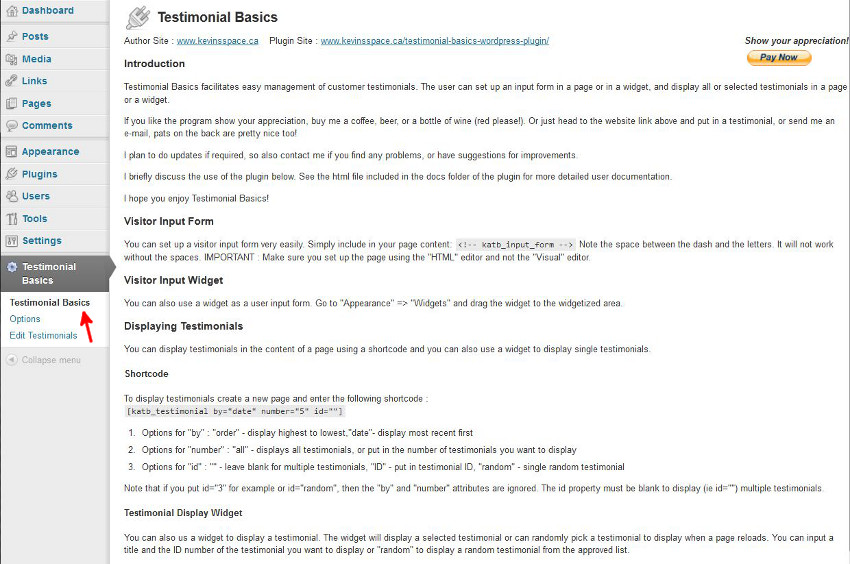
The first thing to note is that there are three administration pages for Testimonial Basics. The first page is a quick summary of how to set up your input form and how to display testimonials. The second section is the Options that you have for your input forms, and for displaying your testimonials. The third page is where you go to manage your testimonials.
So when you can't quite remember the scripts for setting up input forms or displaying your testimonials, save your page come over here and copy them, that's what I do.
Administration Panel - Edit Testimonials
I think it's best to start with "Edit Testimonials" so click that panel and you will see:
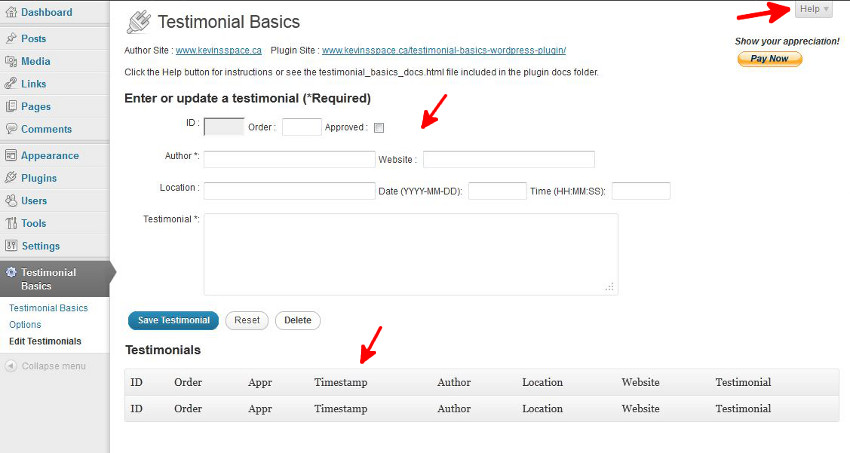
This is where as an administrator you will manage your testimonials. You can can add or edit testimonials here.
Help
There is a drop down help section that provides a quick summary of how to use the "Edit Testimonials" Panel :
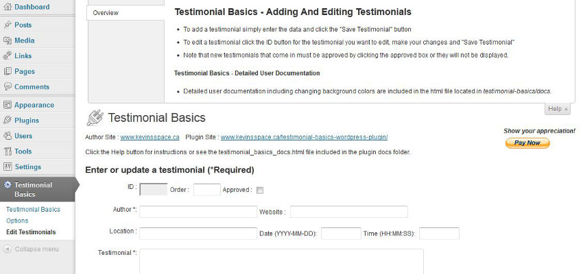
Enter or Update a Testimonial
To add a testimonial, simply fill in the form and click Save Testimonial
:
- ID - every testimonial has a unique id. You can't edit this field.
- Order - When you display testimonials you can use
Order
as a way to ensure certain testimonials are displayed first. Simply enter a number. Ordered displays are shown in descending order so your more favorite testimonials should have the highest number. - Approved - must be checked or the testimonial will not be displayed.
- Author - Required, the name of the person who wrote the testimonial.
- Website - Optional, input the Author Website and a link will be included in the display. Make sure you test the link...you don't want broken links on your site, it's bad for SEO.
- Location - Optional, the location of the person who wrote the testimonial.
- Date - If left blank on new testimonials the current date and time will be used.
- Time - If left blank with a date set, the time is set to 00:00:00.
- Testimonial - Required, enter the testimonial here.
Once the Save Testimonial
is clicked the testimonial is checked for validation, and then it is saved in the
database. The form refreshes to include the saved testimonial. If you want to change something you can do it now,
or later if you want. Below is the screen with a couple of testimonials added.
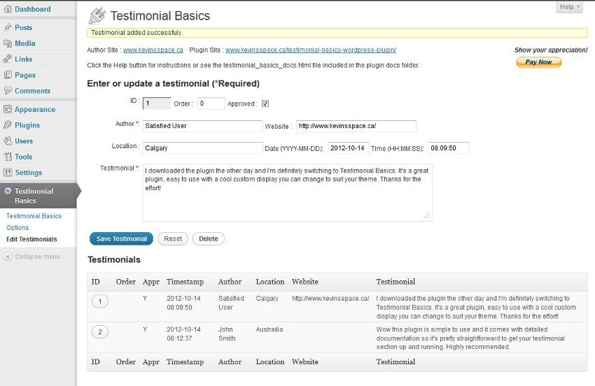
To edit a testimonial click the button under the ID column for the testimonial you want to edit and it will come
up in the edit screen. Make your changes and Save Testimonial
. It is that simple.
Note: If you have a cache plugin installed such as WP Super Cache, the page you use to display your testimonials may be cached. What this means is that if you add and approve a testimonial it may not immediately display. Simply edit the page and update it or wait and the cached files will eventually be deleted and refreshed.
Visitor Input Form
You can set up a visitor input form very easily. Simply include <!-- katb_input_form --> or
<p><!-- katb_input_form --></p> in your page content.
Note : 1) Make sure you
include a space between - k and m - or it won't work, 2) Make sure you are in HTML edit mode or it won't work. Below
is an example of a page set-up.
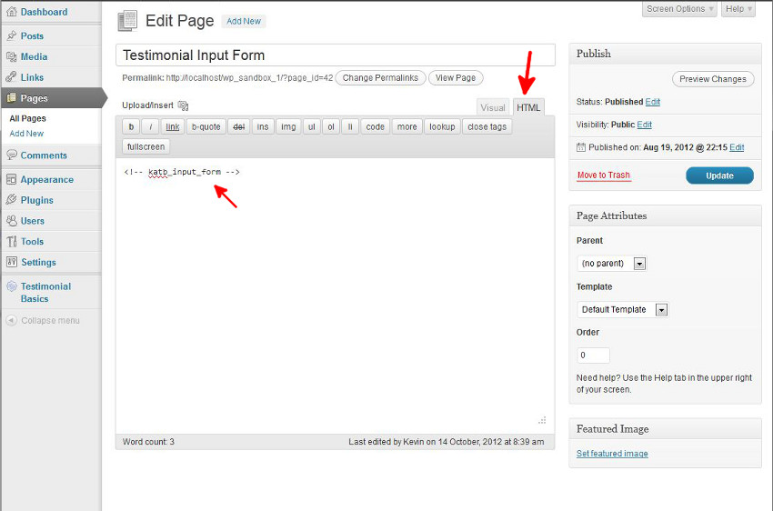
You can also use a widget as a user input form. Go to Appearance
and then Widgets
and drag the widget
to the widgetized area. You can also enter a different title for the Widget if you want.
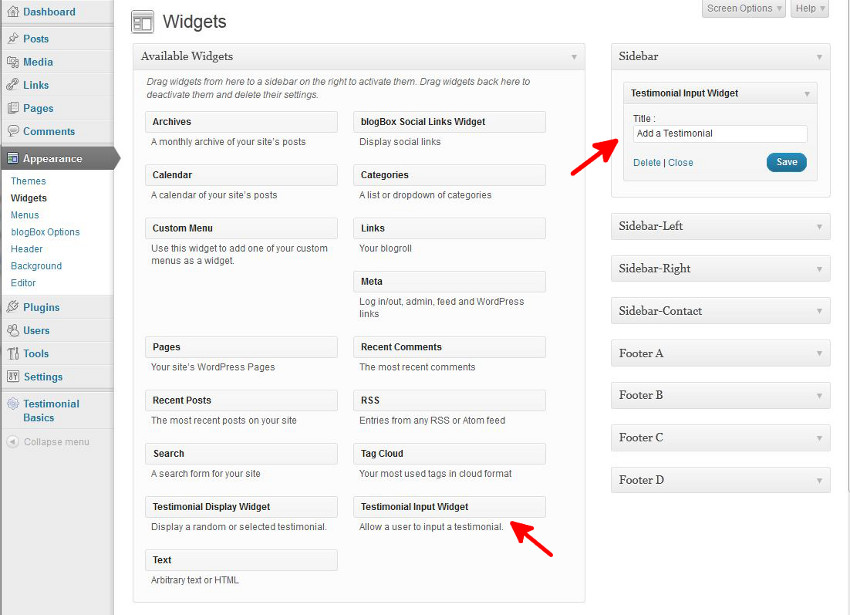
The image below shows the forms as the Visitor would see them. Both the main content form and the widget form are shown. In reality you probably should use one or the other. Visitors are required to enter an e-mail address, which is not saved. The Blog Administrator for your site are sent an e-mail about the testimonial. Once validation is OK, the testimonial is saved in the database. However it is saved as not approved so it is not displayed until you have a chance to log-in, edit if appropriate, and approve.
Also note the captcha. This is an option in Testimonial Basics. There are a few other options for the input forms. I'll discuss them later.
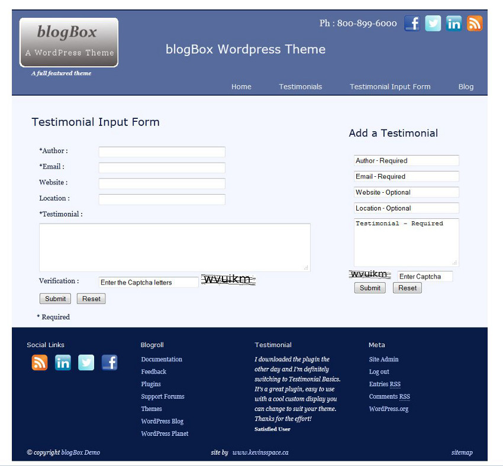
Displaying Testimonials
You can display testimonials in the content of a page using a shortcode and you can also use a widget to display single testimonials.
Shortcode
To display testimonials create a new page and enter the following shortcode :
[katb_testimonial by="date" number="all" id=""]
- Options for "by" : "order" - display highest to lowest,"date"- display most recent first
- Options for "number" : "all" - displays all testimonials, or put in the number of testimonials you want to display
- Options for "id" : "" - leave blank for multiple testimonials, "ID" - put in testimonial ID, "random" - single random testimonial
Note that if you put id="3" for example or id="random", then the by
and number
attributes are ignored. The image below shows the set up.
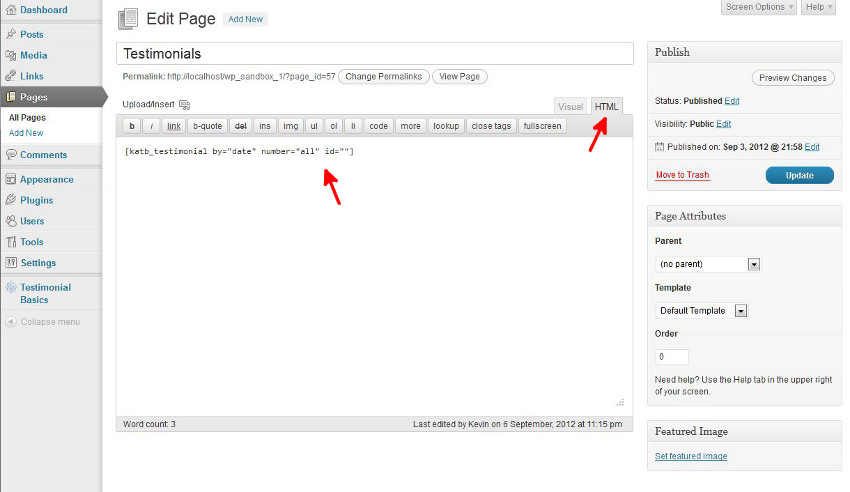
An example of the display is shown below. The testimonials are displayed in a simple format, allowing your themes colors and fonts to be used. You can also select a formatted option that can be customized, see the "Administration Panel-Options" section below.
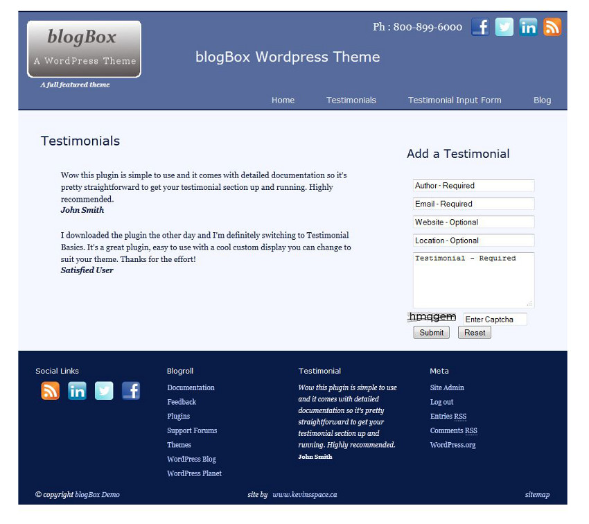
When you have quite a few testimonials the display options can help you out. In particular displaying by="order" gives you great flexibility. Just remember that the highest order number is displayed first. Another thing to remember is that if you display more testimonials than you have numbered, that's OK. The remaining testimonials will be un-ordered testimonials, displayed by most recent date.
One final note : There is no pagination in Testimonial Basics, you can display all your testimonials or a selection on one page. I did not feel there was a need to put in pagination as visitors will likely not want to read more than one page of testimonials. So put the best ones first, and I'd recommend displaying no more that 10 on a page. However you can display them all if you want. If there is demand I can include pagination an a future release.
Testimonial Display Widget
You can also us a widget to display a testimonial. The widget will display a selected testimonial or can randomly pick a testimonial to
display when a page reloads. You can input a title and the ID number of the testimonial you want to display or random
to display
a random testimonial from the approved list.
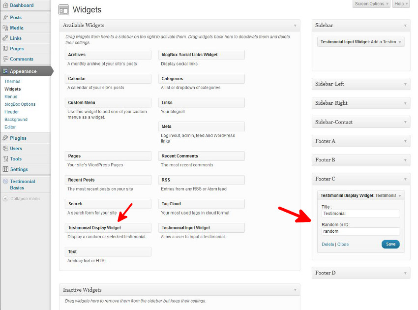
The image below shows the page with both the regular display and the widget display:
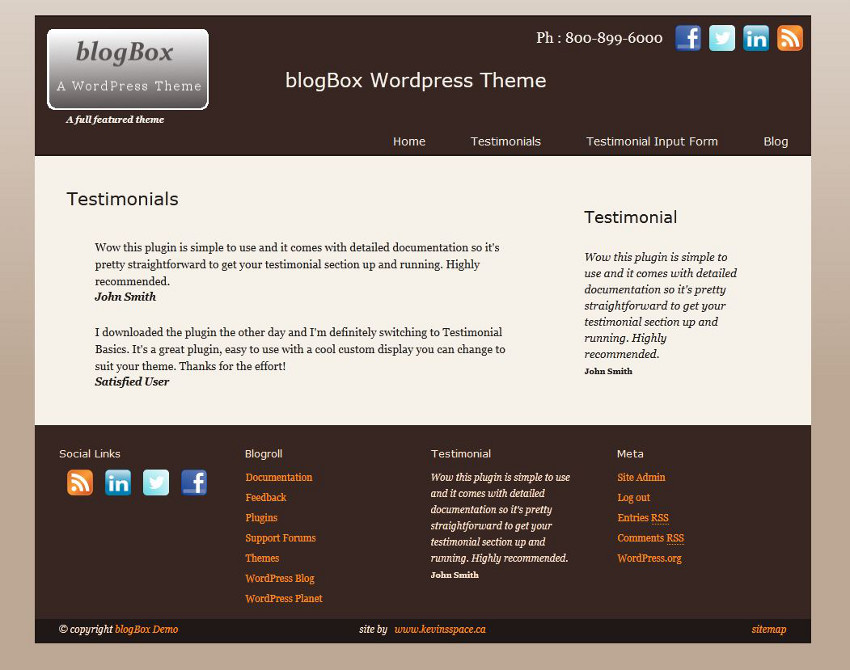
The color scheme has been changed to show that the displays use the native colors and fonts.
Administration Panel - Options
In the initial release of Testimonial Basics I showed the user how to go into the css file and change background colors, font colors and fonts. One of the problems with that method is that the edits are lost after an update. This is not too big a deal as there are not a lot of edits, but never the less they are a pain. Also the user must be quite careful when doing CSS edits or problems can occur. Now all these changes can be made in the options panel, where data entry is much easier.
Start by clicking on "Testimonial Basics" => "Options". The Testimonial Basics Options panel will appear. The screen shot below shows the panel with the "Help" button clicked. A quick summary of using the Options panel is presented.
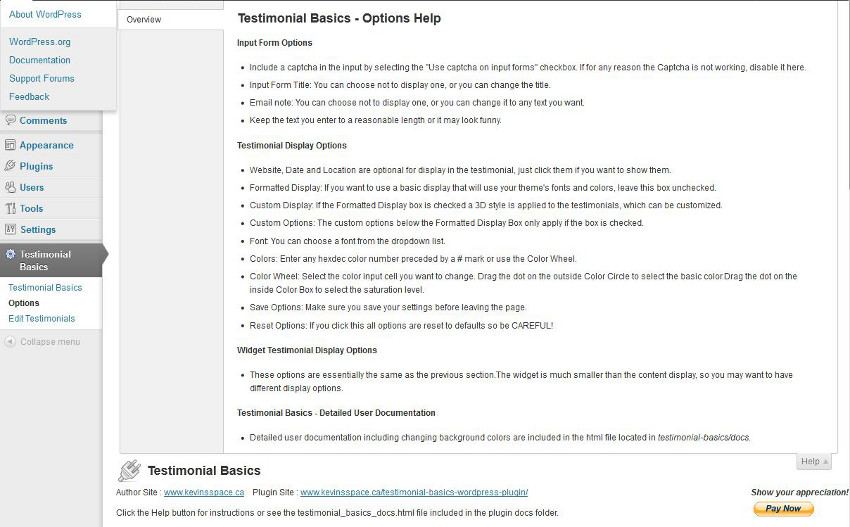
The next screenshot shows the options panel. It is divided up into three sections :
- Input Form Options
- Testimonial Display Options
- Widget Testimonial Display Options
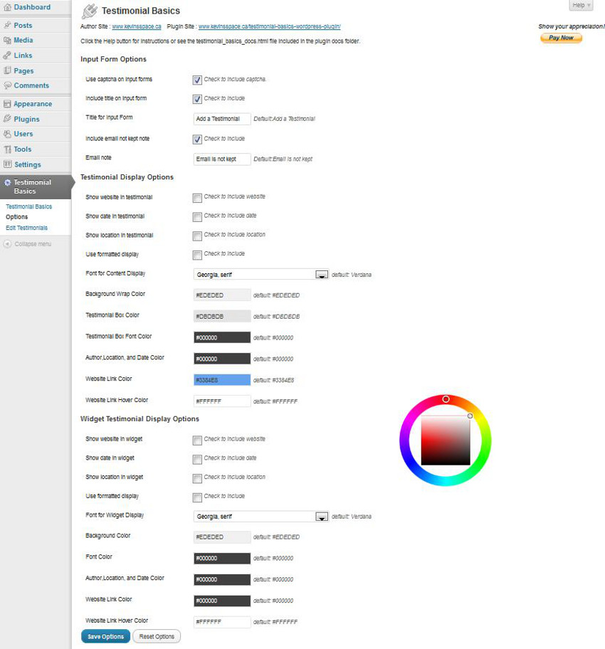
Input Form Options
The options for this section are :
- Use captcha on input forms - Include a captcha in the input by selecting the "Use captcha on input forms" checkbox. If for any reason the Captcha is not working, disable it here.
- Include title on input form - This gives you the flexibility of displaying an input form title. It only applies to the content input form as the Display Widget has it's own title control.
- Title for Input Form - If you don't like the default title change it here.
- Include email not kept note - Check this box to include an email note. It is displayed on the content input form and the widget input form. Typically these kind of input forms include a "Emails are not kept" note so you can check this box and leave the default message.
- Email note - If you don't like the email note you can input your own message here. Also keep in mind that really this is just a second line of text. For example, you may want to use "I'd love to hear from you!"
The screenshot below shows the input forms with these options enabled :
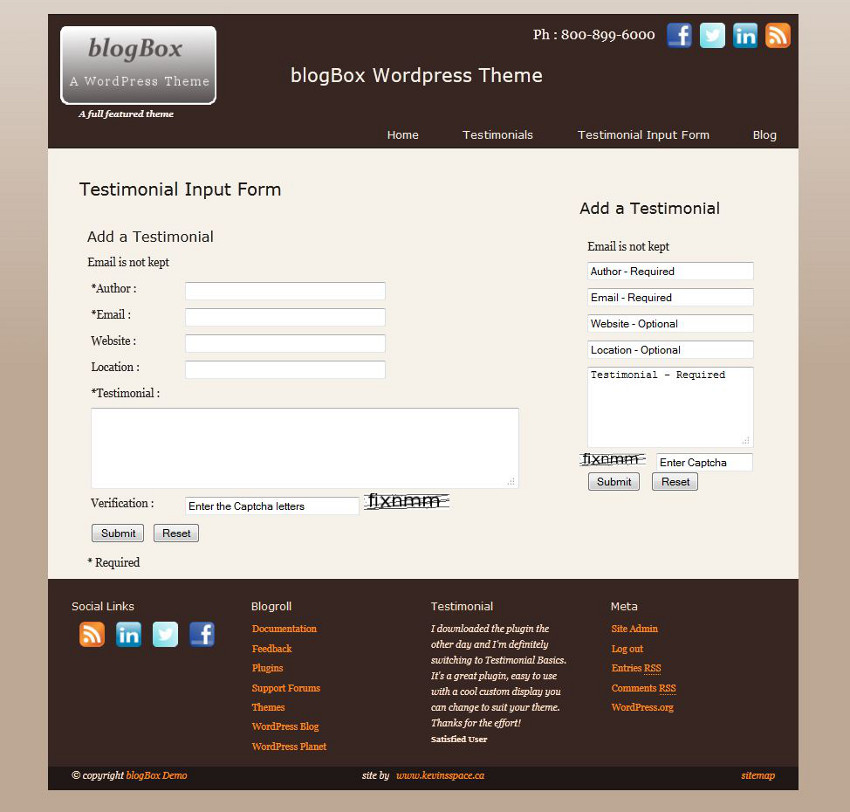
Display Options
The "Testimonial Display Options" and "Widget Testimonial Display Options" sections are very similar so I'll address them together. The first part allows the user to select what is displayed in the testimonial author strip :
- Show website in testimonial - Click this box to display the website link. I'd recommend this for the content display but not for the widget display.
- Show date in testimonial - Click this box to display the date in the author strip.
- Show location in testimonial - Click this box to display the location in the author strip.
In a display Widget, you may only want to display the Author, and leave these options un-checked. Play around and decide what's best for your site.
Below is a screenshot with all three boxes checked for both the content and the widget displays. I've also checked the "Use formatted display" box for each display, as an introduction to the next section.
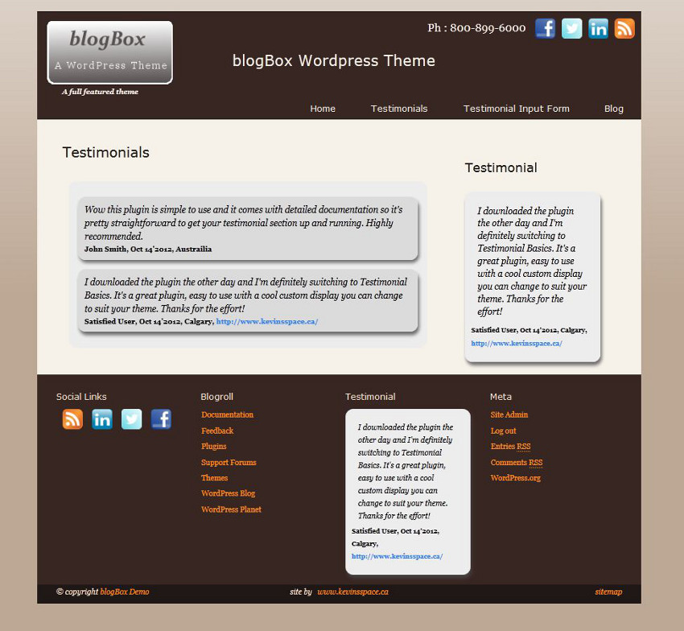
When you initially select a custom formatted display a default set of colors and fonts is loaded. The displays are pretty cool but if your theme has different colors like this one, some adjustments are necessary. With the new theme options panel, it is very easy to do.
Changing Fonts
Select a font from the drop down list and click "Save Options".
They look like :
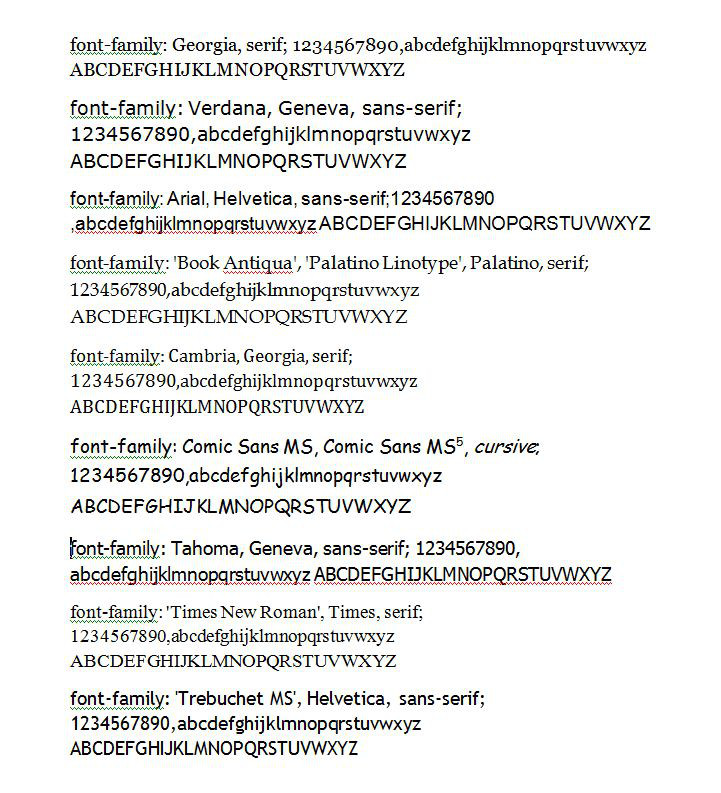To illustrate I'll change to Cambria for the main display and Trebuchet for the widget display.
Changing Colors - Using the Color Wheel
- Select the cell of the color you want to change
- Select the middle of the square box
- Selest the dot on the circle and drag it around to set the basic color
- Select the dot in the square box and drag it to set the saturation
You could also enter a hex color number :
- Hex Color Codes are a 6 character designation preceded by the # sign. You can use the numbers 0 to 9, and A,a,B,b,C,c,D,d,E,e,F,f. So the following are all valid colors : #000000(black),#0000FF(blue),#FAEBD7(AntiqueWhite). The following sites are great color references : Color Names Supported by all Browsers and Html Color Codes
- Another great tool is the ColorZilla add on to Firefox Mozilla. It has a color picker that lets you pick colors on your website, great for color matching.
Make sure you save your options by clicking the "Save Options" button.
I've gone ahead and put in the colors for the new theme. The edited panel is shown below. Note that normally you would put a Testimoial Display Widget in one spot or the other making it easier to custon design the colors. I have attempted to pick colors that fit in both areas

The results of the edit are shown below :

Advanced Function
I have developed a function that can be used in the coding of templates for displaying testimonials. It can come in handy when
you want to display testimonials from within the code and not in the content of the page. An example of such an application
would be in a preformatted page where there is a section you want to replace. Such was the case with one of the websites I look after,
which was why I developed the function. Below is an example of how to use the function :
<div class="testimonialstext">
<?php echo katb_testimonial_basics_display_in_code('date','20','random'); ?>
</div>
The first element must be "date" or "order", the second must be "all" or the number of testimonials you want to display
and the third element can be "random" or "id" where id is the id number of the testimonial, or "" blank if you
want to display multiple testimonials.
A string is returned for each testimonial to be displayed that will look as follows :
<p class="katb_p_test">Your Testimonial</p>
<p class="katb_p_authorstrip"><b>Author</b>date(optional),location(optional),website(optional)</p>
The only formatting applied is to bold the author. You can apply your own custom formatting using the classes I have
included in the return string. Such a thing would best be done by creating a child theme
(WordPress Child Themes)
Summary
I hope you enjoy using the plugin, if you have any suggestions or comments, contact me through my website. If you really like the plugin, buy me a coffee, a beer, or even a bottle of wine.